Si tienes 1/2 hora podrás acompañarnos en este viaje virtual... Volver a Página de Selección de Relatos de Viajes 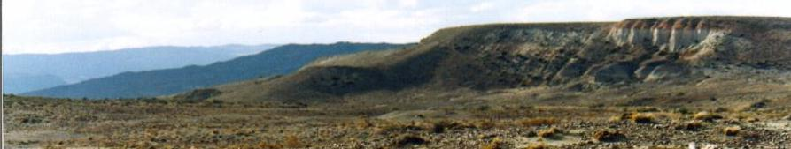 A viajer, pues... Emprendimos con mi familia un viaje de dos semanas por la Patagonia, con un recorrido de 6.000Km. Conocemos bien las costas patagónicas, pero en esta ocasión, luego de pasar por Pedro Luro y Camarones, nos internamos hacia la cordillera para visitar lugares nuevos: Sarmiento y Los Antiguos. Escribo este raconto para recordar los hechos y las impresiones más sobresalientes, y comentar los diversos problemas sobre conservación de la naturaleza que pudimos evidenciar. El viaje lo hicimos en flamante vehículo, un Renault Mégane Scenic, casi recién sacado de la agencia, con solo 500 Km de "ablande" previo. El viaje resultó en todo caso muy "ablandador" ya que incluyó aproximadamente 1.200 Km de ripio, de los cuales cada uno de estos kilómetros, cada diente de "serrucho" y cada pierda, sufríamos junto al auto. No es que la suspensión no era buena, sino que daba pena pensar en el posible daño que le estábamos haciendo. Pero en cuanto a comodidad, el auto resultó asombroso en comparación con el Renault 11, utilizado en similares viajes anteriores. Más espacioso y cómodo en todo sentido para los 5 ocupantes. El viaje empezó recorriendo la Prov. de Bs. Aires por a la Ruta 3. Sin mayores incidentes ni contratiempos, recorrimos a velocidad moderada, y con la novedad de llevar, por primera vez, la cámara filmadora de video, con la cual todos probamos nuestra "mano" de cineastas. La única detención fue el pintoresco corte del camino, al sur de Azul, causado por el cruce de un rebaño vacuno. Gauchos y perros arrearon enérgicamente a la masa bovina algo estupefacta, hasta que los animales se acomodaron a un costado, permitiendo así el paso de los vehículos. Mas allá, pasando Tres Arroyos, nos pareció divisar unos ñandú en la lejanía. Para traspasar Bahía Blanca nos internamos por el medio de la ciudad, ya que no está demasiado bien señalizado el camino periférico. Pero, al fin, llegamos a nuestro desvío hacia el sur, que nos llevaría por la Ruta 3 en un tramo de camino para nosotros desconocido, hasta nuestro primer destino: Pedro Luro. Llegamos a Pedro Luro al anochecer. Pernoctamos en el "Descanso Ceferiniano", un hotel ideado para retiros espirituales que se realizan allí, junto a la vecina capilla que aloja los restos del "santo" Ceferino Namuncurá. éste indio Araucano quiso cristianizar a su pueblo indígena. Estando en Roma, falleció muy joven, no pudiendo cumplir entonces con su sueño. 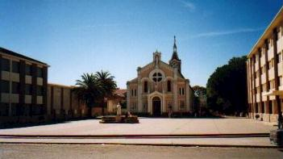 Cuando al otro día visitamos la capilla, nos maravillamos por el diseño interno construido con mármoles italianos, y la muy decorada capillita donde yacen los restos de Ceferino. Pero esa noche llegamos cansados, y al otro día nos esperaba una jornada muy interesante.Salimos temprano para la Estancia Marahué, perteneciente a la familia Scoffield. Yo había estado en contacto por e-mail con Rosemary, inglesa y socia de la Asociación Ornitológica del Plata (AOP - Aves Argentinas), quien nos invitó a hacer una recorrida por su Estancia en nuestro camino hacia el Sur. Teníamos muchas expectativas no solo de conocer a nuestra anfitriona y su familia, sino también de ver nuevas especies de aves propias del lugar, y de hecho vimos varias ese día. Unos 40 km de ripio nos puso frente a la tranquera, en un día ya caluroso. Nos encontramos con Rosemary, su marido e hijos, e iniciamos una recorrida por los campos, a pie, mientras Rosemary nos contaba los pormenores de la explotación agrícola en esa la zona. Pedro Luro se halla al margen del Río Colorado. Alejándose
de los sauces que bordean el río, pronto el paisaje natural se convierte
en áridos campos, con bosques de Chañar. Estos arbolitos
no crecen demasiado altos, y, como dice Rosemary, tienen las "espinas reglamentarias"
de tantas otras plantas nativas de la zona. En general toda la zona es
bastante árida, salvo que, de alguna forma, pueda lograrse la provición
de agua... El sistema de riego funciona con comités directivos, y "canaleros" que abren y cierran las compuertas para distribuir el recurso a cada campo en su "justa medida", o al menos tan justo como se pueda. No cualquiera puede abrir esclusas, ya que cada una posee su propio candado. El agua debe fluir por gravedad, y me imagino la precisión que habrá sido necesaria en las mediciones topográficas, al momento de diseñar el recorrido de los canales. De hecho, los campos son nivelados hoy utilizando un sistema basado en rayo láser. La enorme extensión del área de irrigación tiene desde luego un impacto ambiental, ya que los granjeros de la zona pueden convertir sus bosques de Chañar en fértiles campos para producir cebolla y alfalfa. Así pues, los bosques de Chañar de ese valle están desapareciendo. Pero en el campo de los Scoffield pudimos recorrer, por suerte, varias
extensiones de ese bosque. Primero, cerca de los canales vimos nuestra
primerísima Ratona Aperdizada. La caminata por el bosque de chañar
fué fantástica. Por sus curiosas formas, los chañares
se parecen a delgados (y espinosos) seres extraterrestres, congelados en
el tiempo. Crecen bastante juntos unos a otros, con lo cual ingresar a
un bosque de Chañar requiere precaución a todo momento y
en todas las direcciones. En caso contrario, seguro que uno sale "en llanta".
Pero cuando ingresamos, enseguida nos invadió esa sensación
de descubrimiento, producto de la gloriosa oportunidad de estar allí:
envueltos por la magia de la vegetación natural, y seguramente habitada
por aves que aún no conocíamos. Pronto se presentó
nuestro primer Tuquito Gris, que vimos sin dificultad alguna. Luego, el
escarlata de los Churrinches, y más tarde oímos a la Calandrita
y al Gallito Copetón. También apareció una Viudita
Común. Luego de un delicioso y muy necesitado refrigerio, agradecimos a nuestros amables anfitriones, y partimos para dirigirnos a la costa de mar. Eran otros 40 km mas o menos, entre planísimos campos, hasta llegar a la zona de médanos y, finalmente, la costa. Allí desemboca el Río Colorado, pero recientemente se ha modificado toda la geografía del lugar. El río hoy tiene 3 desembocaduras, y nosotros habíamos llegado a la de más al norte, que es también la más recientemente formada. El fuerte viento soplaba arena contra nuestras pantorrillas, pero finalmente
llegamos al borde del río, cuyo canal corre prácticamente
paralelo a la costa, Tuvimos que avanzar unos 500 metros más hasta
llegar a la playa del mar propiamente dicho. Allí saboreamos una
pequeña merienda. En mi caso no pude quitar mis ojos de la playa,
donde pasé todo el tiempo disponible a lo largo de la orilla buscando
caracoles. Era la primera vez que estaba en una costa marina desde que
adquirí mi guía de caracoles, hace ya casi un año,
y no podía resistir la tentación de tanta diversidad. Entre
las "joyas" que encontré allí, puedo mencionar dos "taladros
de mar". Este es un pequeño caracol cuyo cuerpo se enrula en 10
o 15 vueltas para formar un alargado y fino cono de 5 cm de largo, que
termina en una finísima punta. Estos dos especímenes estaban
en excelente estado, con sus puntitas intactas. Bueno, pero la exposición al sol y al viento nos agotó, y a eso de las 17 horas partimos de vuelta a Pedro Luro, llegando a las 18 horas. Tuve tiempo para lavar los incontables caracoles que había levantado y de envolverlos cuidadosamente, con especial atención a las valvas frágiles. En un viaje anterior no realicé este importante paso, y así se arruinaron muchos ejemplares. Tras una rápida cena en el pueblo, desde donde vimos el cielo teñido de verde, volvimos al Descanso para encontrar que en los arboles del estacionamiento había dos o tres lechuzas de campanario, que oímos y vimos sobrevolar. También hizo su aparición algún atajacaminos: otra especie más para nuestra lista y para coronar un día lleno de descubrimientos. Al otro día continuamos al sur, hasta Carmen de Patagones y Viedma, dos ciudades separadas por el Río Negro. Pasamos las ciudades rápidamente, y nos desviamos a la izquierda para seguir paralelos al río hasta llegar a la costa del mar. De ese tramo recuerdo muy abundantes bandadas del Loro Barranquero, y millones de hermosas flores amarillas a los costados del camino. Iniciamos aquí una recorrida que nos llevaría a lo largo de la costa de la provincia de Río Negro, hasta San Antonio Este. Visitamos primero la Reserva de Lobos Marinos de Punta Bermeja, y luego comenzó el ripio, a veces bueno, a veces arenoso, pero en general muy transitable. El único problema de este tramo fue que del camino se levanta una finísima nube de polvo que penetra cada intersticio del auto, cubriendo todos los controles y artefactos del tablero. En alguna estación de servicio me advirtieron de no "pasar la mano" para limpiarlo, dado que el poder abrasivo del este inocente polvo puede dejar todo rayado para siempre. En este trayecto, que a veces se aleja algo de la costa, y que otras veces brinda vistas espectaculares de acantilados y playas desérticas, nos detuvimos varias veces, para comer, para caminar por inmensas dunas, y también para verificar la abundancia "caracolífera", y, por que no... ¡juntar alguna muestra! Gracias a esta afición de coleccionar caracoles, nunca mas podré pasar ese proverbial momento de "paz y tranquilidad" en una playa: siempre estaré atento a cualquier objeto que rompa la monotonía de las arenas, inspeccionando y quedándome con incontables piezas, descartando algunas, y esperando la aparición de nuevos ejemplares cada vez que el mar se aleja... En fin, ¡aprenderé a manejar mi estrés en las playas! Llegamos finalmente al esperado asfalto. Giramos a la izquierda para llegar a San Antonio Oeste. Tras recorrer 15 Km pasamos un control de cargas. Un par de km más adelante, un puerto. Preguntamos a un transeúnte como continuar hasta S. A. Oeste, pero no nos entendió: era tripulante de un buque extranjero. Pero, ¿donde estábamos? Resulta que en San Antonio Este. Para llegar a la ciudad gemela, la del Oeste, había que recorrer como 65 Km (o sino cruzar a nado solamente 6 km). ¡Nos habíamos equivocada al girar cuando llegamos al asfalto! Finalmente arribamos a San Antonio Oeste al atardecer, y de ahí emprendimos, ya de noche, el tramo hasta Trelew, donde teníamos previsto pernoctar. Llegamos a las 11:30, pero a un kilómetro de la ciudad tuvimos que desviarnos, por que había ocurrido un serio accidente en el cual, lamentablemente, había fallecido una chica de 16 años. Ahora sólo faltaba encontrar el hotel. Habíamos estado ya otro año en ese mismo hotel, así que conocíamos la zona, pero el hotel no aparecía. Ya pasada la media noche, y durante más de media hora, recorrimos sigilosamente una y otra vez las mismas calles de Trelew, evidentemente sin éxito. Los vecinos habrán pensado cualquier cosa de este misterioso automóvil. Pero el hotel seguía sin aparecer, y al final fuimos "al pié": preguntamos en una estación de servicio, que resultó estar a solo 150 m del edificio que buscábamos. Al otro día visitamos el Museo Paleontológico en esa ciudad, y en una gomería le quitamos un bulón de cuarto de pulgada a una de las cubiertas del auto. Luego tomamos camino hacia el sur, hasta nuestro primer destino estable de estas vacaciones: el pueblo de Camarones, en la costa Atlántica de Chubut. En un punto de la Ruta 3, tras recorrer 125Km desde Trelew, giramos y avanzamos unos metros por un camino de ripio que se interna para cruzar esa árida provincia. Allí caminamos por los campos con vegetación natural de "estepa arbustiva", esperando hallar algún pajarito... Los arbustos, de más de medio metro de alto y algunos de ellos repletos de espinas, forman un manto vegetal cuya estatura es bastante pareja. Crecen desde un suelo árido y cubierto de piedritas de todos los colores. Haciendo abstracción del ruido que hacen los vehículos que transitan por la Ruta 3, distante unos 500 metros, se siente solo el viento, y parece que uno está en un inmenso océano. En 360º a la redonda no se observa otra cosa que arbustos: los más próximos con matices de color verde y ocre, y los muy distantes virando ya al violáceo. Ahí estaba yo entonces, inmerso en la soledad de esa infinita sopa vegetal ¿Por qué será que, a pesar de lo inhóspito, desolado y árido que es este lugar donde estoy ahora parado, me llama tanto la Patagonia para volver, una y otra vez, a esta inmensidad? Tantos otros han escrito de la misma manera, de la atracción que les produce, y la inspiración que les crea, por estar siquiera por un solo momento en esta suerte de mar inmóvil. Finalmente mi hijo notó que algo se movía en un arbusto: un ave - y nos pusimos a tratar de identificarla. Era un canastero. Como se quedaba bien quietito, lo pudimos mirar un rato largo, e hicimos todo tipo de observaciones y anotaciones. Sin duda que al llegar al auto nuestra guía de aves nos iba a indicar a ciencia cierta si se trataba del Canastero Pálido, o del Patagónico, que tienen cierto parecido. Pero nuestras observaciones no habían sido completas, y entonces la consulta al libro no fue concluyente. ¡Hay que hacer los deberes antes del viaje! Pero le apostamos al Pálido. Posteriormente, cerca de Camarones, vimos con seguridad al Patagónico. Llegamos a la casita en Camarones, con la cual ya estábamos familiarizados de un viaje el año anterior. Desde esta base, y durante los 3 días que estaríamos en Camarones, realizaríamos salidas a diversos parajes de la costa. La primera fué a la "punta", es decir, el "Cabo dos Bahías", donde está la Reserva Faunística del mismo nombre. En el trayecto se recorren playas desérticas, cada una más atractiva que la anterior, con zonas rocosas, playas de arena, playas aterrazadas de canto rodado, sierras, zonas arbustivas, etc. Finalmente llegamos hasta la reserva donde saludamos a nuestro amigo, el Guardafaunas Jorge López Cross. Tras comprimir las vivencias de todo el año en unos pocos minutos de conversación, continuamos hasta la playa de rocas coloradas. Son parte de la formación llamada "Chon Aiké", que comprende lavas volcánicas efusivas que se extienden hacia el sur, y son parte del sistema "Macizo del Deseado". Existen desde hace más de 150 millones de años, o sea que son Jurásicas, y surgieron como consecuencia de la separación del continente de Gondwana para formar América y áfrica, movida que comenzó por aquel entonces. Allí almorzamos, y también junté caracoles. Luego llegamos por un camino algo precario hasta el Cabo propiamente dicho. Es un promontorio inmenso, hecho del mismo tipo de - aunque de coloración más morada - que se extiende y se sumerge dentro del mar. Presentan múltiples rajaduras, lo cual hace que la larga caminata hasta la punta misma sea algo escabrosa. Allí definitivamente no hay caracoles, así que pude contemplar el inspirador movimiento del mar, con las olas que se baten una y otra vez contra las rocas. Encima nos pasaban un surtido de aves marinas extraordinarias. Los Eskuas y Petreles Gigantes hacían repetidas pasadas a muy bajo nivel sobre nuestras cabezas. En forma permanente pasaban 3 especies de gaviotines y dos tipos de cormoranes, agitando rápidamente sus alas y desviándose apenas de su curso al advertir nuestra insospechada presencia en tan remoto paraje. Todo indicaba que se dirigían a una isla que se divisaba a la distancia, seguramente elegido como lugar de cría por éstas y muchas otras especies. El excelente tiempo nos acompañó esa tarde, con una agradable brisa que aminoraba el calor de los rayos solares, mientras el mar seguía sin cesar con su armónico vaivén que invita a observarlo eternamente. Hoy, desde Buenos Aires, no lo puedo ver, pero apuesto a que ahora mismo sigue haciendo ese mismo movimiento. 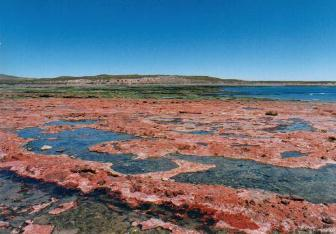 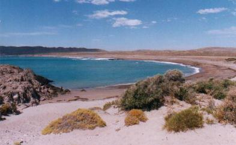 A la vuelta ingresamos en la Pingüinera, lo que constituye toda
una experiencia. Se ingresa en la mismísima colonia de nidificación
de Pingüinos de Magallanes. La tierra allí pertenece a los
pingüinos, y uno es mero visitante - ellos mismos se encargan de aclarar
esa consigna. La inmensa lomada de contínua tierra blanquecina -
seguramente aún más descolorida por los blancos excrementos
de los habitantes - se ve salpicada por infinidades de aves y nidos. Los
nidos son pequéñas madrigueras cavadas en el suelo, que apenas
dan abrigo a los pichones. Los pichones, casi inmóviles, y muchos
aún recubiertos de un suave plumón gris, esperan confiados
a sus padres, de pié fuera del nido, emitiendo cada tanto sus fuertes
y resonantes aullidos de hambre. Y finalmente, el agitado tráfico
bidireccional de los adultos que van y vienen del mar, y que caminan largas
distancias por el calcinado suelo hasta llegar a sus respectivos nidos,
cargados de "papilla de pescado" para la prole. Sorprende la interminable
y abundante cantidad de nidos y aves. Se siente olor a pescado. Se oye
el contínuo coro cuadrafónico de hambre. Uno presiente como
la pesca excesiva que impone el hombre a los mares del mundo eleva el volumen
sonoro del reclamo alimenticio de estos pichones. Los padres salen todo
el día en busca de comido y vuelven al promediar la tarde, pero...
¿Qué padre puede volver al nido sin lograr la ración
esperada? ¿Si demora un poco más en abastecerse, aguantarán
sus pichones? Es por eso que están a la orden del día los
Eskúas y la infaltable Gaviota Gris, que vimos atentos a llevarse
trozos de algún pichón que no resistió. Las importantes
e irrecuperables reducciones en las poblaciones de pingüinos, en todas
las pingüineras de la costa atlántica, son pruebas elocuentes
que indica quiénes se están llevando los mejores bocados. El segundo día en Camarones visitamos Puerto Melo, un paraje
costero algo más al sur, para lo cual hay que ingresar en la estancia
La Ernesta. Conviene, antes de realizar esos 40 o 50 km de ripio, solicitar
permiso en el Camping de Camarones. De otra manera uno se expone a tener
dificultades para entrar, ya que el encargado es muy estricto. ¡Y
no quiero que conste aquí como hicimos para convencerlo a que nos
deje pasar! En Puerto Melo comencé a juntar los primeros ramos de flores y plantas aromáticas, que entregaba a manera de "buquet" a mi esposa. Se fueron amontonando así en el parabrisas del auto, y cada vez que volvíamos a entrar al mismo, pudimos sentir el delicioso perfume de las plantas silvestres de la Patagonia. Mas tarde, mientras recorríamos lentamente un camino interno de la estancia, pasó un zorro detrás del auto. Tan pausado y calmo era su andar, que nos detuvimos para ver si se quedaba. ¡Efectivamente, el zorro se había detenido, y se sentó al costado del camino! El auto estaba unos 4 o 5 m más adelante, pero nuestra presencia no le causaba mayor impresión al tranquilo zorro. Con su boca ligeramente entreabierta, dibujaba en su expresión una cierta sonrisa, un tanto sardónica. Y no se movió siquiera cuando mis hijas dispararon un par de veces con la cámara por fuera de la ventana. Pero cuando me bajé del auto, ya era suficiente. Muy pausadamente se levantó y se internó en ese aridísimo territorio. Sin alambrados que separen el camino del campo, uno puede inspeccionar la vegetación natural de ralos arbustos bajos, que han logrado germinar por entre el tapiz de finas piedras que lo cubre todo, todo. De noche salimos con mi hijo a buscar aves nocturnas: lechuzas y/o atajacaminos. Estábamos bien equipados con un potente faro, que mantuvo mi hijo con su brazo extendido por fuera de la ventana. En más de media hora de insistir por los caminos de ripio no encontramos nada, y volvimos a casa con las manos vacías, y también con un brazo frío. El último día pasamos la jornada en la playa del así
llamado "Puerto Piojo", ubicado entre Camarones y el Cabo. En un momento
apareció, en el mar frente a nuestra posición, una aleta,
probablemente de algún delfín o tonina, que alegró
a mis hijas. Lamentablemente la vigía para observarla nuevamente
no dio frutos. Había mucho sol, pero el agua estaba bastante fría
y nadie se metió. Aquí realice la única acuarela de
viaje. Al promediar la tarde nos fuimos a "Caleta Sara", cerca al cabo, donde observamos el baño de un par de lobos marinos. Al final nos despedimos del Guardafaunas y su esposa, (¿hasta el año que viene?), y volvimos de regreso a Camarones, a prepararnos para emprender la próxima etapa de este viaje. Manejamos el interminable tramo hasta Comodoro Rivadavia, y tras un apetitoso almuerzo en el "SuperQuick" del supermercado La Anónima, continuamos. Para nosotros sería un camino nuevo, y nos internábamos hacia la cordillera, teniendo a la localidad de Sarmiento como destino final para ese día. Salimos de Comodoro con algo de lluvia, lo que restauró parcialmente el lustre a nuestro empolvado vehículo. Ingresamos en zona petrolera, bajamos unas inmensas barrancas de antiguos sedimentos, recorrimos zonas de pajonales y, al fin, llegamos a Sarmiento. Ya en el hotel, descargamos cuanto bulto pudimos, a fin de alivianar el vehículo para realizar el trayecto de 30 Km de ripio hasta el "Bosque Petrificado de Olaechea", y partimos de inmediato hacia ese paraje insólito. Lentamente iniciamos el camino, tratando de no dañar el vehículo pero de a poco fuimos apurando el tranco. Inicialmente observábamos las canalizaciones de otro inmenso sistema de riego. Luego los campos se hacían cada vez más áridos, pero cada tanto aparecía un pajonal o una laguna, donde vimos patos que, sin duda, investigaríamos con más detalle a la vuelta. Finalmente el "Bosque". Consiste en un paraje árido al borde de un enorme barranco erosionado, donde abundan troncos de madera petrificada dispuestos por el suelo según el criterio de la naturaleza. Iniciamos la visita haciendo el trayecto turístico a pié. Observamos las curiosas formaciones del barranco, de material más blando, de las cuales emergen los durísimos troncos silicificados. En algunos lugares todo estaba alfombrado con trocitos de madera petrificada, y aunque la tentación de embolsillar un mísero pedacito era grande, no pudimos traicionar nuestra fuerte convicción por todo lo que significa, con mayúscula, Conservación. Luego nos explicaron que estos trozos son causados por los ciclos diarios de frío y calor que, con el tiempo, causan la desintegración de los troncos. Claro que aún quedan troncos, pero hay que saber que en años anteriores la depredación, por parte de gente que no piensa en el futuro, fue terrible. He oído comentarios que dicen que solo queda una mísera fracción de lo que había originalmente. Sin embargo, la "reserva" bajo tierra es muy grande: mas de 80 Km de montaña mantienen escondidos montones de estos troncos. Para llegar a ellos solo haría falta agua - eso sí, inmensas cantidades de agua - para lavar las barrancas y exponer así lo pétreo. Las barrancas son realmente hermosas. Pertenecen a la formación denominada "Salamanquense", que corresponde al momento a fines del Cretácico cuando un gran mar, conocido por ese nombre, invadió la región al oeste de Comodoro Rivadavia. Hacia el este se encuentran, en estos sedimentos, diversos fósiles marinos, pero aquí, en el extremo oeste de dicho "mar", los fósiles son propicios de una zona lacustre: tortugas, cocodrilos, etc., y, claro esta, también los troncos de árbol. En las barrancas uno descubre todo tipo de tonalidades en estratos horizontales: predomina el rojo y el ocre, pero hay también partes blancas y verdosas, y todas las tonalidades intermedias. La erosión ha creado curiosos pliegues, en realidad valles erosionados, casi verticales, producidos por las lluvias. En rigor, el paisaje es bellísimo, épico. Uno viaja distancias tan largas para llegar a un "bosque petrificado". Llega, ve los troncos, y se va. Pero aquí hay mucho mas que eso. El paisaje realmente acompaña con un majestuoso despliegue del subsuelo, un legado de épocas eternas que enmarcan con imponencia, acorde a la extraordinaria curiosidad geológica que hemos venido a ver. 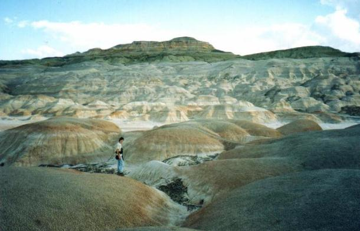 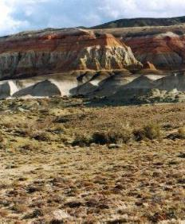 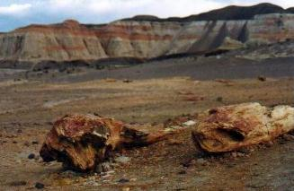 Estuvimos un tiempo visitando solos la formación, durante el
cual también vimos algunas aves: de nuevo los Loros Barranqueros,
y observamos muy bien una pareja de Yal Negro. Luego apareció el
Guardaparques con su camioneta Traffic. Su habilidad de vendedor nos convenció
que valía la pena abonar los $30 para realizar la gira de una hora
en vehículo, y bien pudimos justificar esta modesta erogación,
no solo como aporte a la preservación de este lugar - que debe ser
cuidado permanentemente - sino por que visitamos una zona realmente fantástica:
el "Valle de la Luna". Una zona baja, al pié de las barrancas, donde
quedaban montículos que, supongo, otrora eran parte de la barranca.
Estas rojas bochas son de 3 o 4 m de alto y están una al lado de
la otra, algunas conectadas, algunas separadas por valles que llegaban
al nivel mas bajo. Realmente creaban una ilusión irreal, totalmente
surrealista. ¡Nada hay igual! El guía fue muy amable con nosotros, y entablamos una amena charla. Al final nos enteramos de la causa del leve impedimento motor en su brazo derecho: había perdido el brazo a causa del desprendimiento de una pala de ventilador de auto. Fue llevado a Comodoro Rivadavia, junto con su brazo, donde fue implantado varias horas después de producido el accidente. A la vuelta cumplimos con una extensa detención al costado del
camino, frente a una laguna. Allí observamos nuestros primeros Pato
Cuchara, y había Junqueros y Tachurí Siete Colores en los
juncales, ambos muy activos, justo al borde del camino. Nos sorprendió
los colores del Tachurí, que vimos casi todo negro, con marcas blancas
en el ala y la cabeza, y el vientre amarillo. No se notaban áreas
verdes ni rojas. También nos sorprendimos al ver muchos Varilleros
Ala Amarilla. Seguimos camino pero, aún siendo ya de noche, la lista de aves que veríamos ese día aún no estaba completa: al cruzar un puente, cerca de una granja, vimos una liebre tan cerca del camino que nos detuvimos a verla mejor, cuando se espantó. Creo que le salvamos la vida: a metros de ésta, posado en el piso, estaba un ñacurutú, el mayor búho de estas tierras. Al otro día desayunamos al borde del curioso Lago Musters. Es
bastante azul, con oleaje, amplio, y rodeado por sierras muy bajas. Fuimos
también para atestiguar un serio problema de conservación:
es que al lago Musters le han colocado un "desagote". Se trata de un grueso
caño que lleva agua a la ciudad de Comodoro Rivadavia, y que ahora
se ha extendido hasta Rada Tilly y Caleta Olivia, aumentando la exigencia
de volumen de agua sustraído. Sumado a la seria sequía que
sufren las cuencas cordilleranas del Río Senguerr, que nutre este
lago, el caño está causando una desgracia ambiental. 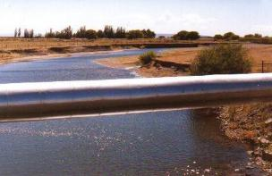 Vimos y fotografiamos al desdichado caño, en el preciso lugar donde cruza por sobre el Río Senguerr. Diría mas bien, que el caño no cruza, sino que atraviesa al río. Seguimos nuestro camino, atravesando las sierras de San Bernardo, desde donde se había extraído algún dinosaurio que contemplamos, días atrás, en el Museo de Trelew. Nos detuvimos a la margen del camino. Seguramente encontraríamos una nidada de huevos de estas bestias... ¡pero no fue así! En cambio, encontramos algunas rocas cubiertas en un lado con cristales de cuarzo, de manera tal que parecía como si el cuarzo hubiera sido volcado desde una mielera. Eran tan curiosas como hermosas, y mis hijas se quedaron con estos "premios consuelo". Luego pasamos una hermosa zona de montañas con rocas turquesas y coloradas, coronadas con una capa de gruesas rocas basálticas. Estos basaltos negros, mucho más recientes que las rocas subyacentes, cubren las mesetas tal como si fuesen un revestimiento de chocolate para una torta de vainilla. Cerca de los bordes, el basalto se resquebraja, y caen en grandes bloques. Donde el camino vuelve a cruzar el Río Senguerr, más arriba, me detuve para elegir y guardar una pequeña muestra de esta dura piedra. Otro "trofeo" de este viaje. Finalmente, tras recorrer amplias zonas de estepas áridas cubiertas
de pastos, llegamos a la localidad de Río Mayo. Y en ese día
se festejaba la Fiesta de la Esquila. Y a esa hora se servía asado
de cordero... Nos sentamos a la sombra en las mesas de cemento, rodeados por la gente local, que eran de lo más pintoresca. Cuchillo: nos habían dado unos de plástico, que realmente poco sirvieron para descuartizar el costillar, así que el pobre cirujano (el que suscribe) tuvo que realizar una de las operaciones quirúrjicas más desprolijas jamás vistas. Pero el almuerzo, finalmente, fue distribuido mas o menos equitativamente, y bien disfrutado. En el centro del predio, la bandera Argentina flameando en la punta del mástil acusaba una fenómeno muy patagónico: soplaba un fuerte viento. Se la veía totalmente estirada, casi tensada, sacudiendo con rápidos o cortísimos temblores, tanto que parecía que se rifaría en cualquier momento en mil pedazos. Por suerte un muro de álamos, estratégicamente ubicado, protegía algunas partes del predio. Mientras, escuchábamos las modestas actuaciones que realizaban varios conjuntos de cantos y bailes tradicionales - tal vez no eran los artistas más cotizados, pero daban un toque que reforzaba la sensación de estar asistiendo a una fiesta verdaderamente auténtica, como las de "antes". Y me quedé con las ganas de fotografiar algunos de los rostros de los que asistían a la fiesta: muy poca sangre europea había allí. La mayoría de los gauchos y peones lucían pelo largo, tez oscura y facciones particulares de las que destilaba una evidente aura indígena. Algunos estaban ataviados con sus mejores ropas "de fiesta". Me pregunto si alguna vez volveré a presenciar una fiesta igual. La reiterada promesa de dar comienzo de la competencia de esquila finalmente
se cumplió, y pudimos captar en la cámara de video la pericia
de los primeros dos participantes. Competían de a dos, debido al
reducido espacio del escenario, la disponibilidad de jueces, y sobre todo,
por que la "maquina de esquilar" tenía solamente dos "puestos de
trabajo". El motor naftero de la máquina accionaba dos tijeras de
esquila, ubicadas cada una en el extremo de un sistema de brazos articulados,
similar al torno de un dentista de hace 30 años. El esquilador debe
acomodar el animal y mantenerlo tranquilo mientras recorre casi todo su
cuerpo con ese ruidoso dispositivo. Los jueces no solo miden el tiempo
que tarda cada competidor, sino la cantidad y calidad del vellón
de lana que le saca, el manejo del animal y su estado luego de la esquila,
por la probabilidad de que la oveja sufra cortes. Lamentablemente no pudimos esperar para ver la doma, ya que teníamos mucha ruta por delante. El destino final era Los Antiguos, en rigor no tan distante, pero de los 200 Km que faltaban recorrer, más de 120 eran del temible ripio de la Ruta Nacional 40. Y la fama de este ripio no nos defraudó. Fue el ripio mas duro de todo el viaje. Un camino de cantos rodados incrustados en un suelo imperturbablemente duro. Como no había material suelto que aminore un poco esa dureza, cada piedra, centímetro a centímetro, nos hizo vibrar. Entre las ruedas y nuestras butacas estaba la milagrosa suspensión del vehículo, que trabajó como pudo, incansablemente, amortiguando las asperezas del camino. Sin embargo, más allá de la incomodidad y el desgaste mecánico, el camino era totalmente transitable. Nos dirigimos al sur, mientras el viento soplaba fuerte del oeste. Habremos visto pasar 5 o 6 autos en esas 3 horas y media que nos llevó hacer el ripio. Nos detuvimos un par de veces para observar 3 o 4 ejemplares de Monjita Chocolate, que aún no habíamos visto en este viaje. Y de repente el paisaje se transfiguró totalmente: una enorme duna baja de arena había decidido su desplazamiento por esa zona, y nada ni nadie la iba a detener. No se advertía desarrollo vertical, pero cubría un área muy extensa. El camino estaba cubierto por arena, y mirando por la ventana lateral se veía un paisaje totalmente fantasmagórico, en el cual costaba divisar como los arbustos sobresalían del blanquecino piso barrido por el viento, como masas grises a través de una neblina de arena ocrácea. Y, más aún, ese paisaje irreal era más curioso al llegar al borde lateral de la duna, por que la transición era más abrupta de lo que uno podía imaginar: de este lado, todo difuso por la neblina de arena barrida por el viento, y apenas 10 cm mas allá, todo como si nada. Al fin se acabó el ripio y todos suspiramos de placer al sentir como el vehículo se desplazaba ahora sobre la lisísima superficie de la ruta asfaltada. Pasamos la localidad de Perito Moreno y pronto apareció otro paisaje surrealista: inmensas rocas dispersas, dejadas por un enorme glaciar que hoy no existe. El camino lleva por diversas lomas, y hay que agudizar el ingenio para saber interpretar esas ondulaciones por lo que son: las distintas morenas de ese enigmático glaciar. Unos kilómetros más adelante nos sorprende una vista realmente espectacular: el Lago Buenos Aires, y, como telón de fondo azulado, los nevados picos de la Cordillera de los Andes. Este lago es el segundo más grande de Sur América, después del Titicaca. Más de la mitad de su superficie está en Chile, y tiene un decidido aspecto oceánico, por el puro e intenso color azul, y el fuerte oleaje. En realidad, el color de este lago es más azul que el propio mar. El camino va bordeando el lago hasta ingresar en Los Antiguos. Este pueblo, que por sus abundantes alamedas tiene aspecto de ser una parte del alto valle del Río Negro, es igualmente una zona de producción frutícola, donde las cerezas y los damascos están entre las principales variedades. Por su clima benéfico, se sabe que en la antigüedad fue utilizado por los indios Tehuelches como refugio para los más ancianos. Más recientemente fue expuesto a una intensa lluvia de cenizas proveniente del volcán Hudson, año en que se perdió totalmente la producción de frutos. Consultados, los chacareros sostienen que la ceniza no ha aportado ningún beneficio al suelo. El pueblo espera turismo receptivo, para lo cual organiza su "Fiesta de la Cereza" convocando con recitales musicales, y apoyando con venta de fruta y de dulces regionales. Sin embargo, cuando entramos en una panadería local para comprar factura, no encontramos variedades con guindas ni dulce de cerezas. Había que conformarse con membrillo. Ante mi sugerencia de ofrecer alternativas que incorporen el sabor local, el panadero confesó algo así como que nunca se le había ocurrido... Por un error logístico nuestra cabaña no estaba disponible, así que pasamos la noche entonces en un cómodo hotel - mas allá de la hora y media ("por reloj") que debimos esperar para que nos sirvan un simple plato de tallarines, en el restaurant del mismo hotel. Pero al otro día ya estábamos mudados al lugar previsto, que sería nuestra base por 5 días: un lote con nuevas y muy cómodas cabañas, denominado "Geute-Ketel". El único problema que nos confrontó es que habíamos llegado tan lejos con cierto agotamiento, razón por la cual no tuvimos un alto nivel de actividad para recorrer esta zona. Nuestra meta era llegar a los bosques de ñire, pero eso implicaba recorrer otra vez largos caminos de ripio. En definitiva hicimos la expedición a los "Bosques de ñire del Monte Zeballos" en dos oportunidades, y una corta visita a Chile. Los demás días no nos movimos de Los Antiguos, pero igualmente realizamos allí diversas actividades: pesca, cabalgata y visita a una granja frutícola para comprar dulces. En las dos salidas al Monte Zeballos recorrimos casi el mismo circuito, con la diferencia que la segunda vez nos internamos por el camino unos kilómetros más, conociendo parajes de montaña espectaculares. Y ambas veces realizamos caminatas extensas y tomamos agua de los arroyos de deshielo. El camino de ripio nace cerca del puesto fronterizo de Gendarmería, a 2 km del centro de Los Antiguos, y se extiende con dirección general al sur, hacia el Paso Róbalos. Tras algunas partes con serrucho, el camino luego mejora. Se inicia la subida a una meseta, conocida como "Meseta del Lago Buenos Aires". En realidad el camino no llega a la cima de la meseta, sino que la bordea a media altura, quedando a la derecha el valle del fronterizo Río Jeinemeni, y más allá, las cuestas simétricas, ya en el lado Chileno. En un momento nos detuvimos frente a un tramo de vegetación típica y muy hermosa. Contemplamos un extenso alfombrado de arbustos bajos y pastos coirones, los cuales acompañaban la forma de las suaves lomadas hasta perderse en la distancia como un manto ocre-amarillento casi uniforme. Pero observando la misma vegetación a media distancia se desplegaba una gran variedad de colores: el ocre de los pastos; el gris azulado de algunos arbustos - de color similar a hojas de lavanda. Había arbustos de verde muy claro, y otros de verde muy oscuro. Había arbustos con flores amarillas y anaranjadas... Y mirando más cerca aún, el espectro se abría todavía más, con plantas que brindaban flores violetas o blancas, pastos con tonalidades rojizas, ramas secas grises, tallos negros... Un poco mas adelante, donde los arbustos eran más frondosos, nos detuvimos para observar aves. Y allí descubrimos la gran abundancia del Yal Negro y del Comesebo Andino, y contemplamos varios ejemplares durante buen rato. Así, en este día tan agraciado, la vida y la naturaleza se nos presentó "en cueros", como dice una canción de Serrat. 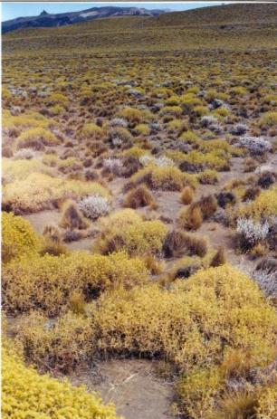 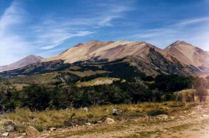 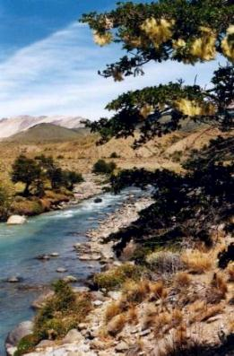 Mas adelante, el conductor advierte un pequeño punto negro, alto en el cielo. Es imprescindible detener la marcha, enfocar los binoculares y confirmar si se trata de un Cóndor. ¡Lo es! El primero que vemos en 3 años. Pasamos algunas estancias, vemos alguna liebre, admiramos la gigantesca y curiosa formación rocosa, con aspecto de catedral, esculpida en el lado Chileno. En este tramo las montañas no son altas, sino más bien parecen ser los bordes de la meseta. Pero en la distancia comenzamos a ver los montes más interesantes, algunos con algo de nieve, y en cuya base notamos una tonalidad muy oscura. Por efecto de la distancia que nos separaba, esa gran mancha estaba casi exenta de color, pero en nuestras mentes pudimos interpretar que se trataba de un manto verde oscuro: era el bosque nativo de ñires del Monte Zeballos. Avanzamos ahora con prisa para llegar, y pronto, al cruzar un arroyo, aparecieron los primeros ejemplares chicos de estas plantas. Sin embargo, ya había pasado bastante tiempo desde que salimos, y el apetito nos llamaba, así que cuando llegamos al río Zeballos, un tributario del Jeinemeni, decidimos parar. Pero antes había que cruzar el puente, frente al acceso a la estancia "La Frontera". El ruido de los tablones daba la impresión de que se estaba desarmando, pero en realidad confiamos nuestras vidas a la estructura metálica. Luego de una merienda al borde de este encantador arroyo, seguimos. El camino ahora ascendía por cornisas y pasaba por dentro del bosque. No sabíamos cuál era el mejor lugar para detenernos. Al final llegamos a otro puente, y ahí decidimos hacer nuestra caminata. Apenas salimos del vehículo se espantaron 3 loros. Serían las Cachañas. Pensábamos que se presentarían otros ejemplares para verlos mejor, pero esto no se dio en el resto de este viaje. Es la segunda vez que las vemos, y siempre tan fugazmente. La caminata empezó con dificultad, por que apenas a 300 m del camino no encontrábamos forma de cruzar el arroyo. Estaba el puente del camino, claro, pero esto implicaba volver atrás. Luego de unas patinadas, mojadas y caídas, lo logramos. Nos internamos en un bosque de arboles bastante chicos. Algunos crecían en barrancas de pendientes extremas, testigo de grandes desplazamientos y desmoronamientos de tierra y roca. Las altas montañas nos bordeaban a ambos lados de este desolado valle, y allí arriba se veían las nieves que alimentaban el frío arroyo. Subimos una barranca con gran dificultad, y nos internamos en el bosque. En cuanto a aves, ya habíamos visto la versión austral del Cabecitanegra en cantidades abundantes, e identificamos con cierta dificultad a nuestro primer Yal Plomizo. Pero ahora se presentaría un ave que no costó asignarle nombre. En el bosque oímos un fuerte "pitio...". ¡Ya sé! dije, ¡debe ser el Carpintero Pitío! En efecto, pronto vimos nuestros primeros 3 o 4 individuos del "Colaptes pitius". Faltó encontrar el Carpintero Gigante. Pasamos largo rato golpeando troncos con rocas o palos para imitar sus anuncios territoriales, pero nunca obtuvimos respuesta. En las averiguaciones que realizamos en Los Antiguos, obtuvimos información contrapuesta acerca de si existe o no en este bosque. El bosque está en retroceso, y se observan cantidades de ejemplares
secos o caídos. No conozco la causa de esta situación. Pero
si oímos acerca del problema de conservación que está
afectando a toda la fauna autóctona: Hay zorro, y el zorro mata
las ovejas. El granjero lo trata de eliminar, y para hacerlo procede de
la siguiente manera: mata un Guanaco y le inyecta Estricnina. El animal
muerto sirve entonces de alimento para el zorro, y también para
los armadillos, diversos roedores, el Carancho, el Aguilucho Común,
las Aguilas Moras, y claro está, también para el Cóndor
Andino. Todos caen en la suculenta trampa mortal. Según nos comentaron,
se está produciendo una importante aniquilación de todas
estas especies, creando serias reducciones en las poblaciones. Así,
se está eliminado toda la cadena alimenticia natural del zorro,
que no tiene entonces otra alternativa que servirse de... ¡los mismos
corderos que se trata de proteger! Y, según entiendo, el mortal
efecto de la Estricnina no desaparece, sino que sigue latente en las víctimas
para que otros seres de la cadena sigan su mismo destino. Vemos que la
acción del granjero elimina toda la fauna autóctona sin beneficio
alguno. ¡Increíble! ¡Denuncio esta terrible práctica
que va a llevar el Cóndor y demás especies a la extinción! La vuelta a Los Antiguos transcurrió sin inconvenientes, y sirvió para recuperarnos de la caminata. Nuestras cabañas estaban a un par de km del centro de Los Antiguos. Próximo a ellas había campos separados por líneas de álamos y acequias de riego, algunas de las cuales parecían siempre estar rebalsando, lo que formaba pequeñas lagunas habitadas por patos Barcino y Cuchara. Y estábamos cerca del Río Los Antiguos, aguas arriba del pueblo. Cada mañana podíamos escuchar reclamos de las Bandurrias Bayas. Era muy común el Fiofío Silbón, con esa enérgica y sonora voz "Fíu" que, sin embargo, decae al final para quedar casi sin fuerza, por lo que Narosky describió ese canto tan acertadamente como "lastimero". Sus suaves colores pardo-grisáceos contrastan tanto con la marca blanca que presenta en la cabeza. Es una verdadera "raya al medio" que pone a la vista unas plumas blancas, pero más parece que todos los individuos han dado un mismo saltito, tal que sus cabezas han rozado una filosa cuchilla, exponiendo sin sangre el hueso del cráneo. Yo siempre quise ver un ave que pudiera decir que era "rara", y si la que vimos aquí no califica como tal, no se cual otra debo esperar para cumplir mi sueño. Cerca del río, entre las ramas de un sauce, oímos un cierto raspado, mas grave y mucho mas lento que el de una chicharra. Vimos la hembra, y luego el macho: una pareja de aves cuyo nombre es simplemente "Rara". Y el nombre científico es "Phytotoma rara". Allí viven en el límite sur de distribución de esta especie. La segunda visita al Monte Zeballos comenzó con mal tiempo. Bueno, "tiempo malo" significa que hacía frío, no había sol, y estaba casi lloviendo. Pero cuando nos acercamos a las montañas y se despejaron un poco las nubes vimos, maravillados, que las montañas habían sido bendecidas por una nueva capa de nieve, que incluso se extendía por las cuestas hasta casi tocar el bosque. Nuestro sueño era alcanzar una placa de esa nieve - si bien al acercarnos el buen sentido nos indicaba que realmente estaban fuera de nuestro alcance. Gracias a la hermosa nieve, el ml tiempo realmente nos regaló una "buena cara". Este día avanzamos hasta el asi llamado "tercer puente". Por el frío y viento afuera, almorzamos dentro del auto, y luego comenzamos a caminar. La dirección a seguir era simple y clara: ¡Hacia arriba! Arriba por que ahí estaba la nieve, por que la vista sería espectacular, y por que esperábamos encontrar lagunas que, tal vez, podrían estar habitadas por la "figurita difícil", el Macá Tobiano, ave propia de Santa Cruz. En realidad, más difícil que ubicar al Macá Tobiano, había sido tratar de dar con el paradero un tal Rodolfo Suarez, estudioso y empedernido buscador de esta especie en las lagunas altas de la meseta. Nos habían hablado de Rodolfo en Perito Moreno. Quién nos alquiló los caballos nos dio una pista más. En la estación de servicio avanzamos un casillero, hasta que al final de varios intentos conseguimos con el ex-intendente de Los Antiguos, quien pudo facilitarnos su número de teléfono, por que Rodolfo vive en Pico Truncado. Al fin, tras tantas arduas gestiones, pudimos dar con él: ¡Prueba superada! De Rodolfo aprendimos mucho de la avifauna de esa zona, durante la larga conversación realizada desde un locutorio. Subiendo la montaña estábamos. Nuestros oídos comenzaban a congelarse pero, poco a poco, paso a paso, subíamos. Pasamos zonas de bosque, donde vimos de nuevo al Carpintero Pitío, y más arriba, entramos en amplios campo de rocas de color ocre-anaranjadas. Se extendían enormes brazos de montaña, en forma de "espina", que invitaban a subir hasta las cumbres, pero cuyas dimensiones gigantes desalentaban tal emprendimiento. En el trayecto pasamos varias lagunas. En una vimos un ave nueva: probablemente una Remolinera Araucana. En otra un Cauquén Común. Al borde de otra laguna distante, vimos un Pato Barcino con pichones. Se alejó del agua para internarse con los pequeños en unos arbustos de ñire. Cuando nos acercamos y mi hijo llegó a metros del escondite, la pata saltó despavorida. Alacanzó el borde de la laguna y comenzó a cruzarla "a remo", utilizando para ese fin sus alas. Llegó al otro lado, correteó por el costado, volvió al agua para seguir remando sin una clara dirección... De momentos parecía ser un animal herido. En resumen, una escandalosa pantomima que, no nos cabe duda, estaba diseñada para distraer y alejarnos del escondite donde habían quedado sus pichones. Bueno, un minuto después continuámos nuestro camino para darle descanso a la pobre pata, que seguía con sus patéticas piruetas... Seguimos subiendo. A unos 100 m de la laguna, un ave en vuelo nos pasa muy cerca: era la misma pata, que realizaba su vuelo de reconocimiento para cerciorarse que realmente nos habíamos alejado lo suficiente, y para hacernos un "chiva chiva". Ahora sí podría volver tranquila al escondite y contar a sus pichones... Mas arriba pasamos otra lomada, y un nuevo gran bajo se presentó, al fondo del cual se extendía una enorme laguna de aguas negras. Y en el medio de la misma, catorce bellísimos ejemplares de Cauquén Real, cuyo porte tan señorial les daba cierto aspecto de cisnes. Buscaban protección quedándose en el centro del espejo de agua, mientras mi enérgico hijo descendió la profunda barranca a fin de explorar el bosque que bordeaba la laguna. Concluida la exploración, mi hijo no tuvo otra alternativa que volver a subir nuevamente la barranca... muy lentamente... Todos cansados y con frío, nos aprestamos a sacar una foto de los 5, utilizando disparo automático, con fondo de bosques y montañas nevadas. Pero parece que la máquina también tenía frío, y rehusó accionar! Desde ahí contemplamos un dramático y hermoso paisaje. La gran altura a la que habíamos llegado nos brindaba una vista dominante. Pero, a nuestras espaldas, las inmensas montañas cubiertas con nieves empequeñiecían nuestro esfuerzo de andinistas! Hacía mucho frío y el viento era bastante fuerte, y cada tanto chocaba contra alguna mejilla una gotita congelada, una suerte de aguanieve. Comenzamos a volver al vehículo, pasando por hermosos bosques y pisando pantanosas turbas. Allí nos cruzamos con una bandadita de los simpáticos "Rayaditos". De la bandada siempre se acerca un ejemplar, para ver que quiere tan curioso ser con binoculares, dos patas largas y que emite extraños chistidos. Se acerca mucho, mira desde las posturas más acrobáticas, y cuando quedó colmada su curiosidad, se va, y no hay manera de chistarlo para que vuelva: el Rayadito ya no necesita investigar más a estos intrusos. Llegamos al auto, y gracias al calor del habitáculo sentimos como nuestras orejas se quemaban! Fue una lástima tener que abandonar Monte Zeballos. Al menos estuvimos en su bosque, pero nunca llegamos a identificar cual de todas esas montañas era el cerro que le daba su nombre al lugar. La visita a Chile fue corta, en parte por que partimos tarde. Visitamos un simpático museo en el pueblo de Chile Chico e hicimos varios kilómetros por el camino de ripio que va al Pacífico. No pudimos llegar al destino recomendado, una laguna próxima al lago, por el estado del camino. Nos detuvimos para charlar con un geólogo Chileno que acompañaba a investigadores franceses, quienes nos mostraron, en un corte hecho con cortaplumas en la barranca de tierra al costado del camino, los infinitos y delgados niveles de sedimento de una antigua laguna. Existe otra visita muy recomendada, del lado Chileno, a la Laguna Jeinemeni, que no pudimos realizar. El largo camino se extiende por el río Jeinemeni, en una excursión de todo un día, análoga a la visita al Monte Zeballos. Nos advirtieron que el cruce de un vado cerca de la laguna era peligroso por que, pasado el mediodía, el deshielo hacía subir el nivel del agua, y se corría el riesgo de no poder cruzar a la vuelta. La laguna es un área protegida. La cabalgata de casi 3 horas pintaba interesante, por que el plan era recorrer los bordes del lago azul. Pero cuando vi llegar los caballos, me di cuenta que la butaca no sería muy cómoda: la montura no era más que un cojinillo de piel de oveja totalmente desgastado, casi desprovisto de lana. Y, peor aún, no había estribos. Esto significa que todo el peso del cuerpo descansaría en la cuña que forma la espina dorsal de los delgados caballos. Bueno, al comienzo todo iba bien. Aguanté casi dos horas de creciente suplicio, hasta que en un momento tuve que hacer un tramo a pie. Igualmente pasamos parajes muy bonitos, y las azules y turquesas coloraciones del oleaje del Lago Buenos Aires eran "muy inspiradoras", pero ni eso podía hacerme olvidar las penurias que estaba sufriendo sobre esa montura. El cruce del Río Los Antiguos fue bastante aventuroso. El caballo de mi hijo se metió en una zona de arenas muy blandas. Se hundió peligrosamente, y comenzó a zapatear para tratar de salir. Mi hijo se bajó del caballo, por que sus pies ya tocaban la arena. Por suerte todo se resolvió en segundos y sin accidentados. De esa cabalgata nos queda un lindo recuerdo del lago y los campos naturales que recorrimos. La única desgracia fue haber encontrado que, allí también, la invasora planta de Rosa Mosqueta está afianzándose. ¿Quién podrá detener en su avance por nuestra cordillera? Partimos de Los Antiguos con tantas vivencias nuevas y el gusto de haber conocido un lugar alejado. Ya a muchos kilómetros del pueblo, me conmocionó el paisaje, y me ví obligado a despedirme de la hermosa vista del Lago Buenos Aires y la Cordillera de los Andes. ¡Será hasta alguna otra vez! Ese día planeamos manejar 860 km hasta Trelew. En el trayecto nos tocaría cruzar un insospechado bosque que cubre enromes extensiones de esa parte de la Patagonia, entre Las Heras y Pico Truncado. Lamentablemente no son arboles vivos, sino una cantidad innumerable de postes para soportar un enjambre de cables que llevan la electricidad a las bombas de petróleo. No era una fila de postes, ni dos ni tres. Parecía mas bien una instalación interminable de contiguos corrales para jirafas, o, como dije, simplemente un bosque de postes. El paisaje esta realmente modificado en una extensión impensable. En Pico Truncado nos detuvimos brevemente frente a la casa de Rodolfo Suarez, quien lamentablemente no se hallaba. Esperábamos conocernos, tras nuestra provechosa charla telefónica, y ver sus cuantiosas fotografías de aves (¿incluyendo Macá Tobiano?). ¡Gracias Rodolfo - y otra vez será! Paramos un rato para comer de nuestras provisiones en Punta Maqueda, un promontorio con playa, al sur de Comodoro Rivadavia. Luego nos despedimos de la provincia de Santa Cruz, cruzamos la gran ciudad, y comenzamos la extensa travesía hasta Trelew. En el camino nos detuvimos a 125km antes de llegar, en ese mismo cruce donde habíamos estado casi 2 semanas antes. Y allí, tras recorrer largo rato por la inconmensurable estepa arbustiva, identificamos nuestros primeros ejemplares de Dormilona Chica: un adulto alimentando a dos pichones. Pernoctamos en Trelew. Al otro día, antes de desayunar, visitamos una gran laguna, cerca del centro de la ciudad. Allí observamos varias especies de aves. Estaba repleto de Faloropo Común, y había algunos Patos Picazo y Zambullidores, pero los Flamencos, que levantaban vuelo para desplazarse dentro de la laguna, y los majestuosos Cisnes Cuello Negro, empataron el concurso de belleza. Al rato ya estábamos en la ruta, camino a San Antonio Oeste. Al llegar ahí, en lugar de tomar el camino más corto que pasa por Río Colorado, tomamos a la derecha para seguir por la Ruta 3. La idea era quedarnos parte de esa tarde en una de las "Playas Agrestes". Y así mas adelante doblamos hacia San Antonio Este, y luego, por el camino de tierra costero, hicimos 15 Km y nos detuvimos en una playa desértica más de 4 horas. Aproveché para juntar caracoles en lo que, posiblemente, sería la última oportunidad de estar frente al mar este año - si bién el año recién empezaba! Encontré enormes ejemplares de una valva llamada "Abanico de Nácar", en bastante buen estado. Habían sido dejados por la marea muy recientemente. (Ya los tengo en casa, bien lavaditos, y el problema ahora es encontrar donde ponerlos!) También encontramos cangrejos, dos grandes peces muertos, y con la marea en bajante nos bañamos en el Atlántico, momento que disfruté enormemente con mis tres hijos, a pesar del frió que la brisa nos causaba, cada vez que asomábamos algo más que las narices por fuera del agua. Advertimos unos chorlitos caminando por la playa. Algunos de ellos eran Chorlitos de Collar, otros eran Playeritos. Parece que es raro encontrar estas especies allí en esta época del año. Ese mismo día, en playas próximas a San Antonio Este, se detectó la llegada muy temprana de otras aves migratorias, como el Playero Rojizo. ¡Que lástima! Es posible que si hubiera estado al tanto de esta curiosidad, hubiera estado mas atento, y podría haber visto mis primeros ejemplares de esa asombrosa especie, que todos los años viaja al ártico y vuelve. Pronto estábamos acercándonos a Viedma, y la aparición de Tijeretas, Benteveos y Horneros me indicaban que la tan querida Patagonia estaba empezando a quedar atrás. Pernoctamos otra vez en el Ceferiniano, y al otro día hicimos el último tramo hasta Buenos Aires. Pasamos las simpáticas Sierras de la Ventana, y ya nos habíamos resignado a cerrar nuestra lista de aves. Cuando faltaban más de 30Km para llegar a Olavarría, el auto transportaba aún a dos ornitófilos que nunca habían visto un Aguilucho Langostero. Pero esta suerte de virginidad duraría muy poco, ya que ahí mismo empezamos a divisar bandadas desordenadas de lo que parecían Chimangos. Pero la formación grupal nos indicaba la posibilidad que sean Langosteros. Estas aves rapaces migran todos los años desde y hacia norteamerica. A cuasa de un mal uso de pesticidas en nuestro país, hace un par de años la población sufrió una bestial merma, que felizmente hoy parece estar controlada gracias a la acción de muchas organizaciones. Pero la especie no se ha recuperado y ya no se ven tan habitualmente. Detuvimos el auto en un punto que resultó ser ideal, ya que varios ejemplares sobrevolaran justo por encima. Afirmativo, eran claramente los Langosteros. En total estimamos un mínimo de 4 o 5 bandadas de 15 o 20 individuos cada una, es decir, un total de 60 a 100 individuos, y tal vez eran bastantes más. La última especie que agregamos a la lista de aves fue un Tuyuyú, una suerte de cigüeña, vista en una laguna de Saladillo, llevando el total de nuestra lista a 162 especies de aves. Y pronto la gran urbe de Buenos Aires nos digirió, y declaramos concluido un exitoso viaje, a la "Patagonia 2000". 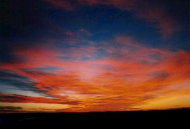 Si todavía no viste todas
las otras fotos, ahora es el momento - Marcá aquí Cuadro de Itinerario y Distancias
Consumo total hasta la última carga en Saladillo: 489,5 litros
(Super Plus) |